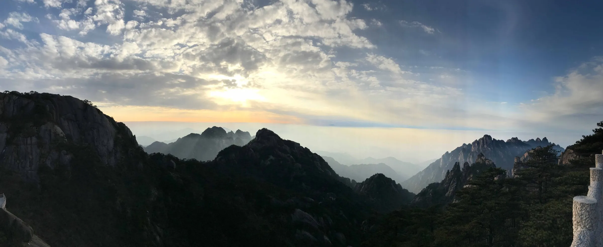

En weer een stap verder in onze reis door China! We schrijven deze post wederom uit de super highspeed trein, ditmaal van Pingyao naar Beijing.
Het reizen met de trein in China bevalt ons goed, omdat het relatief snel gaat én je komt meestal heel strategisch in de stad aan! Win-win. Bovenal kiezen we hier voor, zodat we het Chinese landschap over de lange afstanden kunnen zien veranderen, wat enorm interessant is als je nagaat dat China zowel groene bergen als vlakke woestijn kent.
Eergisteren waren we precies 3 maanden op reis en volgens onze Polarsteps hebben we grofweg 30.000 km afgelegd. Twee mooie mijlpalen!
Huang Shan
Zoals we onze vorige post zijn begonnen, hebben we de trein naar Huang Shan — wat Yellow Mountains betekend (weet je nog?) — genomen. Hier blijken we bij aankomst de beste keus te hebben gemaakt om in het plaatsje (1.500.000 inwoners) Tunxi een hostel te boeken. Dit hostel bevind zich in Old Street en de naam doet zich uiteraard eer aan, het is de oude straat en het is er enorm pittoresk.
Ken je dat, dat je in je accommodatie (hostel in ons geval) aankomt en je meteen zoiets hebt van: “JA! Dit is tof, hier gaan we een goed verblijf hebben!” Nou, dat gevoel was bij ons meteen aanwezig en de medewerkers en de kamers waren echt super! We besluiten om gelijk de volgende dag de bergen in te gaan en staan op tijd op om zoals afgesproken met het hostel 6:30 uur klaar te staan om opgehaald te worden met de bus.
Om 5:45 gaat de wekker. We kleden ons aan en we hebben onze armen nog niet door de mouw geschoven of er wordt om 6:00 op de deur geklopt. Met een groot vraagteken openen we de deur. Een lieve Chinese dame bazelt iets in het Chinees en de frons op ons voorhoofd doet haar besluiten om GO GO GO naar ons te gebaren en met het mooiste Chinese accent ook te zeggen. We kijken elkaar aan en we besluiten iets te versnellen, maar ons zeker niet te haasten. Half 7 is half 7. De Aziaat (we hebben dit in andere landen inmiddels ook meegemaakt) is redelijk onberekenbaar qua tijd en afspraken. Óf je staat 2 uur lang op de nachtbus te wachten zoals in Vietnam, óf er wordt een half uur van tevoren aangeklopt met de vraag waar je blijft. Het is altijd weer een verrassing.
Om de vrouw toch een beetje tegemoet te komen, staan we om 6:15 bij de receptie waar dezelfde dame staat. Ze geeft ons 2 duimen in de lucht. Ze zegt nog wat in het Chinees tegen de nachtportier en ze gebaart ons te volgen. We lopen door de prachtige donkere straatjes van Tunxi, waar om de hoek de bus voor ons klaar staat. We nemen als eersten plaats in de koude bus. We kijken elkaar aan en hebben een flashback naar Guilin, hopende dat we dit keer toch echt alléén transport naar de kabelbaan hebben geboekt en niet een volledige tour! De bus vult zich met een tiental Chinezen en we gaan op pad. De dame die ons in alle haast opgehaald heeft gaat niet mee en dat daarmee best een opluchting — geen tour gelukkig!
Met de slaap nog half in onze ogen komen we na 1,5 uur aan bij het benedenstation van de Yellow Mountains. We stappen uit de bus en vanaf dat moment is alles onduidelijk. Uiteraard is alles weer enkel in het Chinees omschreven. Geen enkele Engelse uitleg en niemand die Engels spreekt. Met de vertaal-apps komen we ook niet veel verder en besluiten ons maar als kuddedier te gedragen en met de rest mee te lopen. Bij een willekeurige balie kopen we een ticket van ￥38,- (€5,50). Waar het ons naartoe brengt weten we alleen niet… heerlijk die onduidelijkheid!
Dit ticket blijkt echter voor de tweede bus die ons naar het middenstation brengt. Hier aangekomen komen we er achter dat je hier je entreetickets koopt voor zowel de Yellow Mountains als de kabelbaan naar boven.
We genieten al sinds het begin van onze reis van het feit dat het hier laagseizoen is. We hebben eigenlijk nergens wachtrijen gehad, of dat het ergens zó druk is dat je je weg naar voren moet werken om ook maar íets te kunnen zien.
Ook bij de Yellow Mountain’s lopen we langs meters lange dranghekken die als zigzaggende slangen (weet je nog; vroeger; Snake op de Nokia) zijn neergezet vanwege crowd-control. We lopen ze allemaal voorbij en staan zo vooraan om een kaartje te kopen. Ook bij de kabelbaan lopen we zo door en nemen de kabelbaan naar boven.
Zodra we wat beginnen te stijgen daalt onze onderkaak steeds verder naar beneden en aanschouwen we het eerste adembenemende vergezicht. We stijgen dóór de wolken en komen uiteindelijk dan ook boven de wolken uit, wat echt zó prachtig is om te zien; de toppen van de bergen die in de verte als maar meer lichter grijs worden en uiteindelijk samenvloeien met de bewolking die ertussen hangt. Het is inmiddels 8:30 en rond het vriespunt, we stappen al grijnzend de kabelbaan uit en weten beiden dat dit een prachtige dag gaat worden.
Grofweg gezegd lopen er 3 hike routes door de bergen en we beginnen met goede moed aan de eerste route die bij de kabelbaan begint. Het is zo mooi dat we na een aantal minuten al concluderen dat dit niet zo’n bestemming is waar de plaatjes op internet altijd zoveel mooier zijn dan de werkelijkheid, maar dat het ECHT zo prachtig is!

We schieten de ene foto na de andere, maar concluderen al gauw dat elke foto niet de werkelijke prachtige waarheid weerspiegeld. We krijgen geen genoeg van al dit moois en na zo’n 15 km klimmen en afdalen in de bergen besluiten we dat het na 8 uur hiken mooi is geweest. We zijn zo gaar als kip. Al zoekende naar de kabelbaan naar beneden, komen we een gids tegen die gelukkig Engels spreekt en die adviseert ons haast te maken daar het inmiddels al 16:30 uur is en de kabelbaan om 17:00 uur sluit! We zetten het op het rennen en na een heee-heeee-heeeeeleboel trappen en klimmen en rennen komen we bekaf om 16:52 uur aan bij de kabelbaan naar beneden. Deze blijkt dan al gesloten, dit terwijl de gondels nog wel af- en aankomen! Er staat een politieagent/parkwachter die geen Engels kan en wij gebaren dat we toch echt mee moeten! We krijgen een berg Chinees naar ons hoofd en zijn niet veel wijzer. We worden wat wanhopig, maar gelukkig komen er nog 4 mensen aangerend (het moest gewoon zo zijn), en 1 hiervan kan een beetje Engels. Na deze als tolk te hebben gebruikt komen we er achter dat deze meneer niets voor ons kan betekenen en wij ten prooi gevallen zijn aan pure bureaucratie.
Het enige wat er voor ons op zit is naar beneden te hiken. Het is inmiddels 17:00 uur geweest en de zon gaat al onder wat niet handig voor onze trip naar beneden is, maar wel weer prachtige beelden geeft.
Met zijn zessen (onze vier nieuwe vrienden en wij twee) beginnen we aan een tocht naar beneden die nog eens ruim 5 km is. In het pikkedonker (lang leve de telefoons met een flitser als lampje ÉN de powerbanks) lopen we met zijn zessen in meer dan 2,5 uur naar het middenstation. Hoe uitgeput we ook waren en hoe pijn alles in onze benen maar vooral knieën ook deed, beiden lopen we met een grijns naar beneden en zijn we zo dankbaar dat deze 4 op ons pad kwamen. Let wel… alles staat nog steeds in alleen het Chinees hier aangegeven, dus ook de bewegwijzering voor het pad naar beneden. Zelfs onze 4 metgezellen snapten soms de borden niet en met hun lopen we een aantal keren verkeerd (kan je nagaan als we het zelf zouden moeten vinden).
Na de barre tocht naar beneden komen we aan bij een (ander) middelstation dan waar we opgestapt zijn. Het is inmiddels tussen 19:00 en 20:00 dus de bussen naar het dalstation zijn er allang niet meer! Bij de pick-up plaats waar we dit concluderen staan nog 2 locals en zoals we het begrijpen hebben zij een bus weten te regelen door iemand te bellen. Deze komt binnen 40 minuten. Al wachtende in de kou breidt de groep uit met nóg 6 laatkomers. Ook proberen we met de “originele” 4 te communiceren over ‘hoe nu verder’ als we beneden zijn én of ze een taxi kunnen regelen. We denken dat we elkaar begrijpen en lachen naar elkaar. Samen zeggen we tegen elkaar dat ook dit goed komt en zien in de verte de bus aankomen.
De rit met deze bus duurt ruim 3 kwartier en met stijve spieren en zere benen stappen we de bus uit op het dalstation. Onze 4 helden moeten ook naar Tunxi, alleen kunnen er maar 4 in een taxi en maken zij gebruik van een soort Chinese variant op Uber (online taxi bestellen met creditcard). Dit blijkt voor hun moeilijker dan gedacht en er wordt met de 2 locals die we bij het middenstation tegenkwamen gekeken wat onze opties zijn. We horen prijzen voor een taxi voorbij komen, variërend van ￥160,- tot ￥220 (grofweg €22,- tot €28,-). Inmiddels vinden we bijna alles al goed en stemmen in. Iedereen belt wat rond en kijkt in zijn taxi-app, maar dit lijkt niet echt succesvol. We komen er achter dat de 2 die sinds het middenstation bij ons clubje “we-zijn-te-laat-en-moesten-de-berg-af-lopen” zijn gevoegd locals zijn en dus hier in de buurt wonen. Ze geven aan dat ze misschien wel iemand kennen die ons wilt terugrijden. Een soort particuliere taxi dus.
Uiteindelijk weten ze iemand te regelen met een 7-persoons auto die ons terug in Tunxi wil afzetten voor slechts ￥40,- per persoon! De afstand is vergelijkbaar met een retourtje Ede – Rotterdam. Wij vinden het uiteraard fantastisch en rond 22:30 uur, 14 uur later dan ons vertrek, zijn we weer bij ons hostel in Tunxi. We eten wat en na een hete douche duiken we meteen het bed in… Wat sliepen wij lekker!
We hebben zeker nog 4 dagen flink last van onze spieren en knieën maar dat beperkte ons niet in ons reizen. De volgende dag zijn we dan ook vanaf Tunxi met het vliegtuig naar Xi’an gevlogen. Het standaard riedeltje ‘security – inchecken – douane’ was de snelste ooit. In welteverstaan 3,5 minuten zaten we (uiteraard) veeeeeeelste vroeg bij onze gate te wachten tot we mochten boarden.
Xi’an
Onze vlucht naar Xi’an was op kerstavond en onze eerste dag in Xi’an was dus eerste kerstdag. De Chinese cultuur doet niets aan Kerst en we hebben dus ook niet echt het kerstgevoel gehad. Het was inmiddels wel enorm koud geworden en om nog bij te komen van ons avontuur besloten we het rustig aan te doen en hebben we ons van koffietentje naar koffietentje verplaatst om een beetje internet te zoeken. Na te moeten concluderen dat dat niets uithaalt, hebben we op onze hotelkamer onder 3 dekens kerstfilms in bed gekeken.
Xi’an bezoek je voor het Terracottaleger. Dit ‘leger’ is in 1974 ontdekt door een boer bij het slaan van een put en is in de jaren daarna blootgelegd door overheid-aangewezen archeologen. Sinds 1979 is het te bezichtigen voor het publiek.
We hebben er veel over gehoord en gelezen en concluderen dat we écht geen 800-dagenpas nodig hebben, maar dat we het in een middag ook wel kunnen bezoeken. Ook hebben we onze verwachtingen naar beneden bijgesteld, zodat we niet teleurgesteld terug kwamen. Na weer wat scams te hebben ontweken, stapte we in de juiste bus (de scams zijn ook bussen die je uiteindelijk wel naar de afgraving rijden maar én meer kosten én eerst langs wat juweliers rijden voordat je bij het leger wordt afgezet. We hebben de afgravingen in de omgekeerde volgorde bekeken en dit was een goed idee. Hal 1 is de tophal. Hal 2 en 3 zijn daarentegen leuk voor ‘erbij’. Dus wij hebben 3-2-1 gedaan. Het is op zijn zachts gezegd zeker indrukwekkend. En wat mij (Tim) voornamelijk verbaasde is dat geen enkel beeld in zijn geheel is opgegraven, maar dat elk beeld uit scherven volledig opnieuw in elkaar is gezet (men is hier tot op de dag van vandaag nog steeds mee bezig, wat ook zichtbaar is tijdens het bezoek).
Pingyao
Zoals we ons bericht al begonnen, zijn we zojuist vertrokken uit Pingyao. Pingyao bezoek je om zijn Chinese authenticiteit. Het is een bijzonder goed bewaarde stad van zo’n 40.000 inwoners binnen de compleet intacte stadsmuur, allemaal daterende uit de Ming Dynastie. Het overgrote deel van de stad binnen de muur is autovrij en dit is heerlijk om doorheen te slenteren en om van alles wat om je heen gebeurt te genieten. De straten zijn hier voorzien van lampionnen, de authentieke manier van straatverlichting. Lantaarnpalen vind je hier dan ook niet. Alles is voor het overgrote deel van hout gemaakt en voor isolatie gebruiken ze nog zelfs nog mest en stro.
Het grappige van Pingyao is dat Tunxi totaal in het niets valt hierbij, maar dat wisten we toen nog niet! We genieten straat na straat van de traditionele ‘het-is-hier-net-een-filmset-vol-met-huisjes’ zoals je oud China voor je ziet. Ook raken we verzeild in een verlaten festivalterrein. Het staat vol met leegstaande fabrieken, die dienden als tentoonstellingsruimtes voor het jaarlijkse Pingyao International Photography Festival. Wat we hier tegenkomen is een onwerkelijk geheel en het lijkt wel een beetje een spookfestival geworden. Alle gebouwen waar de exposities (in september elk jaar) gehouden worden zijn nog volledig ingericht! Alle geëxposeerde foto’s liggen weliswaar aan stukken gesneden op de grond of hangen zelfs nog aan de muur. We lopen door de vele gebouwen en kijken onze ogen uit. Foto’s van een zwemmende Mao tot aan een serie dat (voor Chinese begrippen) controversieel ingaat op homoseksualiteit. Een behoorlijk contrast welteverstaan. We hebben wat nagevraagd bij locals, maar er wordt ons niet veel duidelijk.
Vanmiddag zijn we op de trein gestapt naar Beijing en helaas is er zulke luchtverontreiniging/smog dat het momenteel de hoogst schadelijke categorie is. We zijn vanuit de trein meteen de metro ingestapt en direct naar onze hotel kamer gegaan, uiteraard met mondkapjes op. We hopen op regen!
Hieronder een selectie van de meest vreemde vertalingen, vertaalfoutjes en vreemde naamkeuzes die we tijdens onze reis tot nu toe tegen kwamen, met name in China:
- Naam van een eettentje: Chewing good
- Gerechten op de menukaart:
Sun died tomato’s
French Fried
Noodles Brakefast - Onderaan een menukaart: Enjoy your male
- Aids for visually impaired persons op de knop voor stoplichten om over te steken
- Watch out for pinching (ze bedoelen te zeggen: “Pas op dat je hand niet tussen de deur komt.”)
- Caution we floor
- By way insure you safe (typisch gevalletje door een een vertaalmachine halen en niet controleren)
- Children need trout-up to ward (zelfde als hierboven)
- Good-fellowship clue on (ik krijg er een Lord of the Rings gevoel bij)
- Thrid Floor (Third! Jammer joh)
- Civilised travel starts from me (geen idee wat hier geprobeerd wordt te zeggen)
- Dear guest: The construction of roads, to bring you travel inconvenience, forgive please!
- Drepn the woeld (we hebben geen idee wat hier hoorde te staan maar het stond mega groot op iemand zijn jas)
- Keep public health … tja wat bedoelen ze?
- Handle or strap broken or Tom off. Oh Oh, die Tom!
- Welcome to take our flight vonden we op de verpakking van een tandenstoker in het vliegtuig. Ja, echt, een tandenstoker.
- Roayl Best, zal vast Royal Best moeten zijn.
- Carefully slide (dit was in de douche en ze bedoelden: “Pas op dat je niet uitglijdt.”)
- Bij een hotel: Today has the room … we gaan er gemakshalve maar vanuit dat ze vandaag nog een kamer of wat vrij hadden.
- In een restaurant op de kaart hadden de engelse vertaling in elk gerecht surface staan… wat blijkt dit moest noodle zijn…..w
P.S.
Ze kennen hier ook geen oud en nieuw… dus we vragen jullie al jullie foto’s van jullie vuurwerk te mailen naar vuurwerk [ a t ] timvanheukelom.nl (Ja! Dit emailadres bestaat vanaf nu echt).
Een gelukkig en gezond 2017! Een jaar vol reisvreugde en verrassingen.prachtige verhalen en adembenemende fotografie.
Prachtig verhaal gents, leuk om te lezen. Ik volg julliee avontuur, wat zullen jullie straks idd rijker thuis komen!
Tim weet je nog dat we de weg kwijt waren in Frankrijk een ook zo’n eindeloze wandeling hebben gemaakt, zonder water in een verlaten gebied. Wij maar lopen en zi gen om je af te lijden.
Fijn dat alles is goed gekomen met jullie en jullie compagnons op de berg.
Geweldig weer! ❤
Mijn reactie is om onduidelijke redenen mislukt dus probeer ik het nogmaals!
Heel mooi om mee te genieten via jullie foto’s en verhalen! Vooral natuurlijk het terracotaleger in Xian. Prachtig die Chinese paarden!
Ik snap wat jullie bedoelen, dat foto’s nooit kunnen weergeven van wat je ziet en voelt.
Het is geen wonder dat jullie je niet verstaanbaar kunnen maken in hun Engelse Chinees. Heel,apart hoor!
P.S. Foto’s van het vuurwerk heb ik helaas niet. We zaten in dikke mist en hebben er zelf ook niets van gezien!